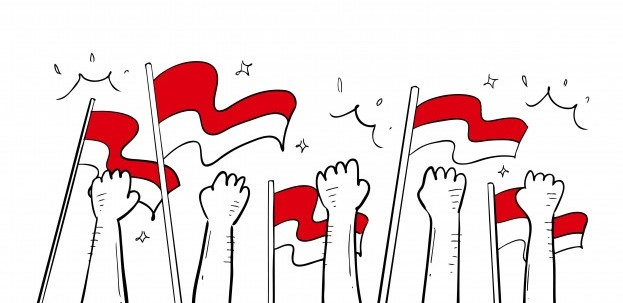
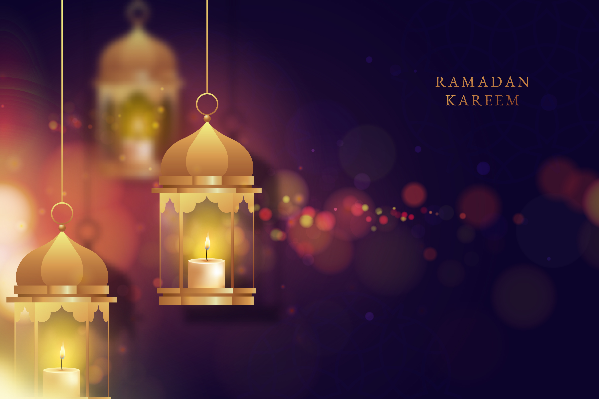

Virus Corona Covid-19 yang telah membuat geger dunia rupanya diyakini tak hanya membawa bencana.
Menerut peneliti , ada berkah lain di balik wabah corona
Secara kasat mata, virus corona-19 memang menjadi bencana bagi umat manusia. Ekonomi dunia
morat-marit. Korban pun banyak yang berjatuhan. Di balik itu, ilmuwan juga temukan fakta yang cukup
mencengangkan
...
corona justru memberikan
kontribusi dan manfaat besar untuk kesejahteraan manusia. Manfaat yang dimaksud adalah
peningkatan
kualitas udara, orang-orang lebih sering berkumpul bersama
keluarga,
meningkatkan keimanan dengan hanya mengharap kepada Allah SWT
Menjadi Pahlawan Dikegentingan

Hidup tidaklah digariskan selalu mengikuti keinginan jiwa. Damai tanpa persoalan dengan menyantap
berbagai kemudahan. Andai garis hidup seperti yang diinginkan maka gerak hidup kemuliaan akan
terhenti dari catatan. Sejarah perjuangan dan lembar kepahlawanan akan hilang bersama kemanjaan.
Kita tidak akan pernah menyaksikan keindahan berselancar di lautan tenang. Kehebatan seorang
peselancar akan tampak di tengah lautan bergelombang. Mereka para pejuang yang dicatat dengan tinta
keemasan tidak lahir dari dunia yang penuh kesenangan. Keikhlasan, kesungguhan, jihad dan
pengorbanan menjadi bahan baku lahirnya para pejuang.
Corona datang dengan gelombang besar yang menggoncang. Menghentak penduduk dunia dari keterlenaan.
Menyadarkan manusia akan kelemahan. Menghidupkan kembali nilai kepedulian akan kemanusiaan. Inilah
saatnya menyaksikan siapa pahlawan sungguhan dan siapa pahlawan jadijadian.
Dalam kegentingan tidak dibutuhkan manusia yang panikan. Tidak dianggap hebat mereka yang
menggampangkan. Terasa menyakitkan mereka yang mengambil kesempatan. Tidak guna juga mereka yang
gemar pencitraan. Dunia hari ini butuh pahlawan ditengah kegentingan. Dia datang saat orang
menghilang dan dia pergi saat orang berbagi.
...Setiap saat, sepanjang nafas
kehidupan, kegentingan selalu dihadirkan. Sebagai penguji siapa yang
paling baik amalnya. Yang diperlukan bukan lari dari kenyataan tapi umat berhajat kepada
pahlawan
yang riang menjemput kepahitan. Siapa yang matang dalam kepahitan sungguh akan siap dalam
kesulitan.
Disaat orang-orang beriman melihat kedatangan 10.000 pasukan ahzab mengepung Madinah, mereka
berkata:
“Dan ketika orang-orang mukmin melihat golongan-golongan (yang bersekutu) itu, mereka
berkata,
“Inilah yang dijanjikan Allah dan Rasul-Nya kepada kita.” Dan benarlah Allah dan Rasul-Nya.
Dan
yang
demikian itu menambah keimanan dan keislaman mereka.”
Saatnya memaknai ulang Ramadan

Bukankah berpuasa itu merelakan hak individual untuk kemaslahatan yang lebih besar?
Niat saya berbuka puasa di sebuah mal di DKI Jakarta pernah pupus karena semua restoran telah penuh
sesak. Beberapa orang yang tak kebagian tempat seperti saya terpaksa duduk mengemper di lantai. Saya
memilih untuk membeli air kemasan di supermarket dan pulang ke rumah. Di lain waktu, saya
membela-belakan untuk stand-by di sebuah restoran sejak pukul setengah lima sore agar tidak
kehabisan tempat.
Walaupun buka puasa bisa dilakukan di mana saja, berbuka puasa bersama di luar rumah telah jadi
tradisi yang tak terelakkan setiap bulan Ramadan, entah sekadar karena bosan di rumah atau
menjadikannya ajang untuk bersilaturahmi dengan kawan-kawan lama.
Buka puasa bersama itu pun kadang berwujud pemberian dari orang lain—seperti ibu kos yang memberikan
makanan kepada anak-anak kos karena paham mereka kerap menahan lapar, masjid yang membagi-bagikan
makanan bagi orang yang tak mampu, atau kantor yang menyediakan takjil bagi yang masih bekerja. Saat
masih mahasiswa, organisasi saya di kampus juga selalu mengadakan piket takjil. Setiap harinya, ada
saja yang menyiapkan makanan buat seluruh anggota—dari yang sekadar cemilan seperti kue basah dan
cendol hingga martabak dan batagor yang porsinya cukup besar untuk makan malam.
...Tak dimungkiri bahwa bulan
Ramadan lekat dengan kegiatan-kegiatan komunal yang akhirnya turut
mendefinisikan arti bulan puasa di Indonesia. Namun, pandemi COVID-19 mendisrupsi
kegiatan-kegiatan
tersebut. Sejak awal April, pemerintah telah mewanti-wanti agar kebiasaan berkumpul di kala
Ramadan
dapat dihindari. Menteri Agama Fachrul Razi menerbitkan Surat Edaran terkait Panduan Ibadah
Ramadan
dan Idul Fitri Syawal 1441 H. Fachrul Razi mengatakan kegiatan di masjid ditiadakan—termasuk
salat
tarawih, iktikaf, dan salat id. Masyarakat pun diminta untuk tidak melakukan kegiatan takbiran.
Majelis Ulama Indonesia (MUI), Pengurus Besar Nahdlatul Ulama (PBNU), dan Muhammadiyah telah
memberikan imbauan serupa.
Bagi Dwi Lestari, pandemi akan mengganggu rutinitas tarawihnya. “Aku biasanya suka pindah-pindah
masjid buat tarawih biar nggak bosan sama suara imamnya. Kadang di dekat kosan di Depok, kadang
sampai menjelajah ke masjid Istiqlal. Tapi sekarang mau nggak mau harus tarawih di rumah,” kata
Dwi
kepada Asumsi.co (22/4).